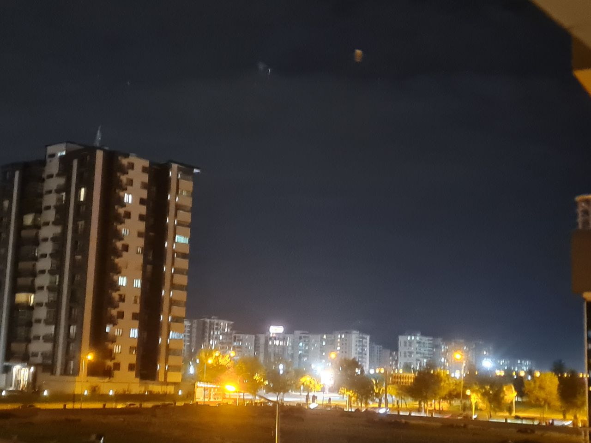

Light Pollution
Release Date: 10/09/2026---Writer: jellyfishpearl88
Release Date: 10/09/2026---Writer: jellyfishpearl88
Have you ever looked up at the sky and thought, “If there are billions of stars and galaxies in the universe, why can’t we see them?”
The reason is light pollution. The definition of light pollution is the excessive and unnecessary waste of artificial, human-made outdoor lighting that disrupts the natural environment, wildlife and ecosystems, energy and climate change, human health, and the observation of celestial bodies at night.
Let’s take a look at an example of the sky near my location (Left Picture) and the sky located in Atacama Dessert, Chile (Right Picture) and notice the difference. The sky near my location has bortle class 6 to 7 darkness level. The Atacama Desert, however has bortle class 1 to 2 darkness level.


Looking at these two pictures, you may ask yourself how bad light pollution is.
For human health, light pollution impacts the confusion of the circadian rhythm, cause of low melatonin, and many more which can even include cancer that’s linked to low melatonin.
In fact, light pollution affects the living organisms around us, including animals and plants too. Artificial light misdirects nocturnal animal navigation, disrupts insect pollination, and alters plant and tree cycles.
Additionally, light pollution brightens the night sky which pressures to reduce the visibility and distinction of celestial objects like stars, galaxies, planets, etc.which makes astronomers observing the sky in inhabited areas challenging.
There are seven types of light pollution: glare, skyglow, light trespass, light clutter, and over-illumination.
Glare is an excessive, bright light that causes visual discomfort or impairs vision, such as a harsh unshielded streetlamp or high-beam headlights. Skyglow is the orange or hazy dome of light above populated areas caused by artificial light scattering off particles in the atmosphere, washing out the stars. Light trespass is unwanted artificial light that spills over into areas where it is not needed or wanted, including a neighbor’s floodlight shining into a bedroom window. Light clutter is confusing, excessive, and unorganized groupings of bright lights like densely packed neon signs and commercial billboards. Over-illumination is using much more artificial light than necessary, or leaving lights on continuously when they are not being used.
Unfortunately, we can’t stop the entire light pollution in the world for ourselves. However, there are some practical steps to reduce light pollution as an individual at home:
1. Use fully shielded luminaires (light fixtures) that face light strictly downward rather than sideways or upwards.
2. Choose warm color temperatures like warm-white or amber light bulbs instead of cold, harsh colors like blue-white light bulbs.
3. Turn off non-essential lights and reduce unnecessary interior and exterior lights at night.
Even if you think that these movements are small, it’s still a better process than not doing anything at all. Spread this for everyone to reduce as much light pollution as possible!